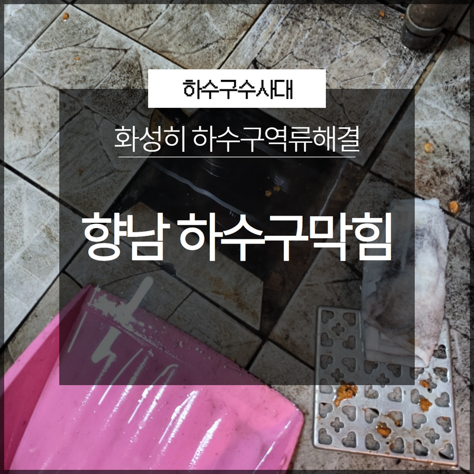
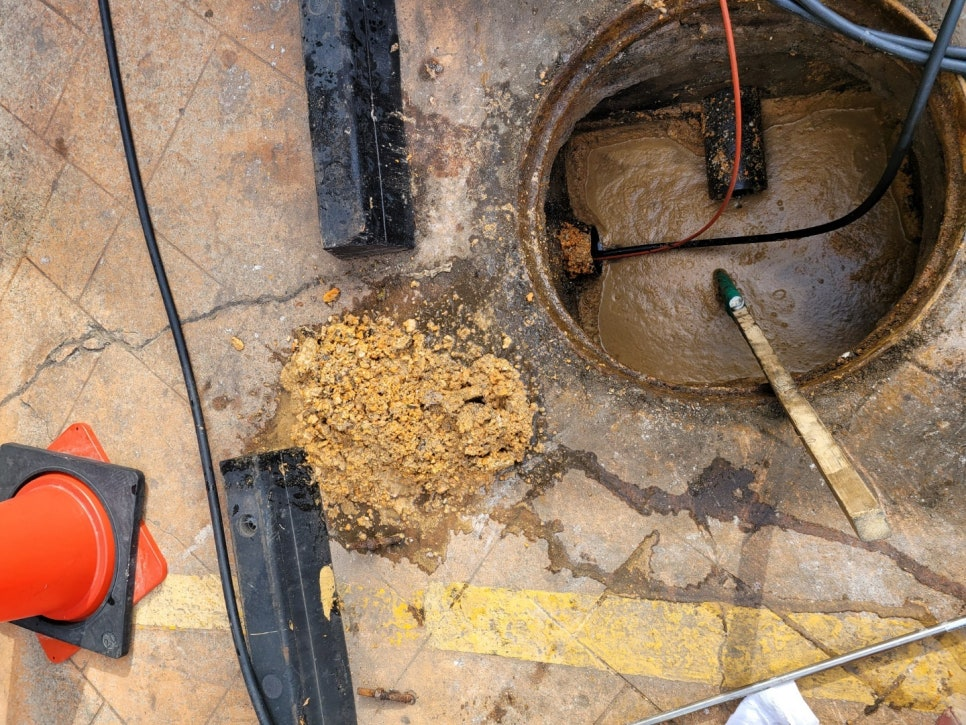
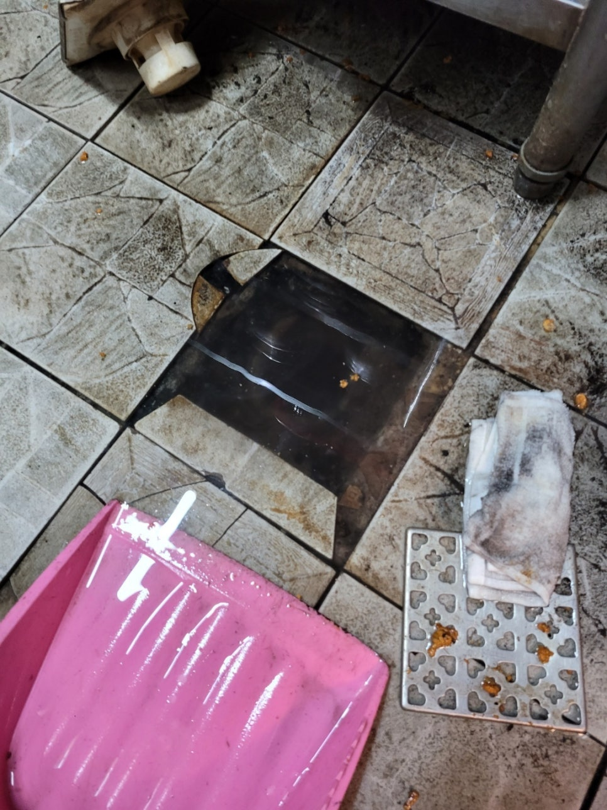

🏠 화성 정남 하수구맨홀 역류 향남 고압세척 하수구뚫는곳
화성 향남 하수구막힘 전문 시공 후기

📋 작업 개요
- 위치: 화성 향남, 향남, 화성
- 서비스 유형: 하수구막힘, 배관막힘, 맨홀막힘, 집수정막힘, 역류해결, 뚫는업체, 배관청소, 고압세척
- 작업 일시: 2023. 9. 11. 0:34
- 업체명: 하수구수사대 (010-5615-2118)
🔍 문제 상황
안녕하세요 하수구수사대입니다!
일상 속에서 하수구를 이용하는 일이 많이 있습니다. 배관 같은 경우는 보통 눈에 보이지 않는 것이다 보니 하수구로 들어간 이물질들이 저절로 외부로 다 빠질 거라고 생각을 할 수 있지만 일부 배관의 경우는 이물질들이 배관 벽에 붙게 되면서 물이 빠지지 않는 상황이 발생을 할 수도 있습니다.
특히 기름 같은 종류가 배관을 막을 확률이 큰데요 음식을 대량으로 사용하는 식당 같은 경우에는 배관이 막히는 정도가 더욱 심할 수 있는 것입니다. 이번에 방문한 현장의 경우에도 화성시 향남하수구막힘 역류해결을 위해서 방문한 식당이었는데요 하수구막힘 현장을 통해서 어떻게 해결을 하였는지에 대해서 알려드리는 시간을 가져보도록 하겠습니다.

🔎 원인 분석
💡 전문가 진단: 화성시 향남하수구막힘 역류해결을 위해서 방문을 한 식당에서는
화성시 향남하수구막힘 역류해결을 위해서 방문을 한 식당에서는
주방 쪽에 있는 트렌치 하수구가 막혔다는 말을 듣고 방문을 한 곳이었습니다. 현장에는 바닥 한가운데 있는 하수구로 식당 주방에서 사용한 물이 함께 빠져나가는 구조로 되어 있었는데요 이곳은 주방 내부를 청소할 때도 사용을 하는 곳이었기 때문에 배관막힘으로 인한 불편이 크신 상황이었습니다. 현장에 도착을 해서 트렌치 부분을 열어서 살펴보았는데요 이미 기름기가 가득 섞인 물이 입구 위쪽까지 차올라 있는 상황이었습니다.
원래는 물이 없어야 하는 곳이었는데요 맑은 물만 나와야 하는 곳에서 기름기가 낀 이물질들이 배관 내부에 가득 들어있는 상황이었습니다. 그래서 우선적으로 배관 내시경 카메라를 이용을 해서 내부의 상태를 확인해 보고자 하였습니다. 내시경을 통해서 살펴보니 입구에서부터 벽면에는 이곳저곳에 기름 슬러지가 굳어 있는 것이 보였는데요 하지만 통로 가운데까지는 막고 있지 않는 상황이었습니다.

🔧 작업 과정
그래서 카메라를 더 깊숙한 곳으로 넣어서 확인을 해보니
외부에 있는 하수구까지 전체적으로 다 막혀 있는 상황이었습니다. 기름들이 점점 배관에 붙어서 굳어서 기름때가 되면서 외부에 있는 집수정까지도 같이 막혀있는 상황이었습니다. 하수구막힘으로 인해서 고객님에게는 집수정 청소가 필요하다고 말씀을 드렸습니다. 내시경 카메라가 나온 부분을 발견해서 다행히 관로 탐지 없이 이물질 제거 위치를 찾아낼 수 있었습니다.
우선은 실내부터 작업을 먼저 해서 안쪽으로 뚫어주면서 바깥쪽에서도 양쪽으로 진입을 해서 전체적으로 뚫어드리는 작업 상황을 먼저 설명을 드렸습니다. 내시경 카메라를 통해서 샤프트기를 투입을 하고 작업을 시작하였는데요 이 장비 같은 경우는 진입을 하는 케이블이 엄청나게 얇기 때문에 동시에 진입을 해서 이물질을 눈으로 보면서 바로 제거를 할 수도 있습니다.
기름때 슬러지가 워낙 많은 상황이어서
굳이 보지 않고도 하수관막힘의 이물질들을 금방 제거할 수 있는 상황이었습니다. 하지만 혹시 슬러지에 가려져서 보이지 않게 되는 부분이 있는지를 확인을 하기 위해서 내시경카메라를 이용해서 집중적으로 확인을 하였습니다. 다행히 특별한 것들은 보이지가 않았는데요 커다란 덩어리들이 지속적으로 형성이 되면서 기존에 막혀있었던 상황으로 보입니다.


✅ 작업 완료
그래서 슬러지 부분을 모두 다 뜯어낸 후에 실내에 있던 배관을 모두 깨끗하게 청소작업을 하고 다시 한번 내시경을 통해서 확인 작업을 하였습니다. 바깥으로 더 내려가면서 확인을 해보니 이전에 있던 이물질들은 모두 제거가 된 것을 확인하였습니다. 이렇게 이물질들을 모두 제거를 하게 되면 한동안은 편안하게 배관을 사용을 할 수 있게 되는데요 하지만 이런 식당 같은 경우는 정기관리를 통해서 꾸준하게 관리를 받는 것이 갑작스러운 막힘을 예방할 수 있는 방법이라고 할 수 있습니다.
경기도 화성시 향남읍 상신하길로298번길 7-11 8층 805호



⚠️ 하수구 배관 막힘 예방 및 관리 가이드
- ✅ 머리카락, 비닐, 물티슈 등 물에 분해되지 않는 이물질은 하수구 유입을 절대 금지해 주세요.
- ✅ 하수구 거름망을 씌우고 모여진 이물질은 주기적으로 쓰레기통에 바로 비워주셔야 합니다.
- ✅ 배관 노후가 심할 경우 이물질이 더 쉽게 걸리므로 주기적인 배관 세척(고압세척 등)을 권장합니다.
- ✅ 작업 후 1년 이내 재발 시 하수구수사대에서 무상 A/S 보증 서비스를 제공합니다.
💡 핵심 정리
- 확실한 장비 작업(내시경 점검 및 샤프트 스케일링)으로 원인을 뿌리 뽑습니다.
- 작업 후 1년 이내에 동일한 부위 재발 시 100% 무상 A/S 서비스를 보장합니다.
- 서울 · 경기 · 인천 전 지역에 24시간 언제든 긴급 출동할 수 있도록 항시 대기 중입니다.
❓ 자주 묻는 질문 (FAQ)
🚨 화성 향남 하수구막힘 문제로 고민이신가요?
정확한 원인 진단과 확실한 시공으로 재발 없는 해결을 약속드립니다.
24시간 긴급 출동 | 서울 · 경기 · 인천 전지역 | 1년 내 재발 시 무상 A/S